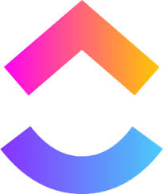

Jira
El empresarial
- Ventajas:
- Flexible y personalizable
- Amplias opciones de integración
- Ideal para equipos grandes y proyectos complejos
- Personalización
- Seguimiento de proyectos
- Integraciones
- Colaboración
- Informes y análisis
- Inconvenientes:
- Curva de aprendizaje más pronunciada
- Puede ser más costoso para equipos pequeños
- Sobrecarga de funciones
- Dependencia de plugins
Trello
El bajo presupuesto/Sin presupuesto
- Ventajas:
- Fácil de usar e intuitivo
- Ideal para equipos pequeños y proyectos simples
- Visualización gráfica de tareas
- Flexibilidad y personalización
- Fácil colaboración en equipo
- Integración con otras herramientas
- Disponibilidad
- Inconvenientes:
- Limitaciones en la personalización
- Puede ser menos eficiente para proyectos grandes y complejos
- Funciones limitadas en la versión gratuita
- Dependencia de internet
Asana
El olvidado
- Ventajas:
- Buena combinación de flexibilidad y facilidad de uso
- Amplias funciones de colaboración
- Escalable para equipos de cualquier tamaño
- Interfaz de fácil uso
- Gestión flexible de tareas
- Colaboración en tiempo real
- Notificaciones y actualizaciones
- Integración con herramientas
- Asignación y priorización de tareas y IA
- Inconvenientes:
- Puede resultar complejo para usuarios nuevos
- La versión gratuita tiene limitaciones

ClickUp
El aspirante
- Ventajas:
- Muy versátil con múltiples opciones de visualización
- Incluye funciones avanzadas como gestión de proyectos, tareas y recursos
- Planificación visual de tareas
- Plataforma todo-en-uno
- Altamente personalizable
- Integraciones con otras herramientas
- Inconvenientes:
- Curva de aprendizaje más pronunciada
- Puede ser más costoso para equipos pequeños
- Curva de aprendizaje alta
- Interfaz sobrecargada
- Rendimiento lento
- Automatizaciones limitadas en la versión gratuita
- Configuración compleja de dependencias
Monday
El que aparece en todos los anuncios de YT
- Ventajas:
- Diseño intuitivo y atractivo
- Amplias funciones de colaboración en tiempo real
- Integraciones con otras aplicaciones populares
- Personalización de flujos de trabajo
- Vistas múltiples
- Colaboración en equipo
- Automatizaciones
- Inconvenientes:
- Puede ser más costoso para equipos grandes
- Limitaciones en la personalización avanzada
- Funciones avanzadas en planes premium
- Curva de aprendizaje con automatizaciones
- Rendimiento lento con proyectos grandes
- Falta de funcionalidad o ine